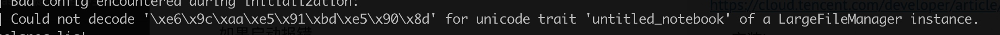

1 基础工具包安装pip
在安装package之前，首先要安装的就是包管理器。
1.pip
安装pip sudo easy_install pip
通过pip安装python包 pip install xxx
常见问题
# 当前版本
pip --version
# 版本升级(有些包安装需要依赖高级版本)
pip install --upgrade pip
## 升级某些包
pip install --upgrade SomePackage
# 安装包时候报错`time out`
pip --default-timeout=100 install xxx
## 指定安装目录
pip -t 目标目录 xxx
更新pip给出一个最简单的办法就是通过pip uninstall pip卸载pip，再用easy_install pip安装pip,这样安装的就是最新版本的pip了。
权限
在mac上安装包的时候，因为系统限制不让写到内容到系统目录里去。解决方法
- 重新安装一个自己版本的python，比如可以用ancoda安装
- pip安装的时候加入参数
pip install xxx --user，安装到当前用户目录下。
安装完成后还需要将该目录加到环境变量里才能使用
export export PATH=/Users/$your_name/Library/Python/2.7/bin/:$PATH
更新某个包时候报错
Cannot uninstall 'six'. It is a distutils installed project and thus we cannot accurately determine which files belong to it which would lead to only a partial uninstall.
解决办法：
pip install six --upgrade --ignore-installed six
当机器上有多个版本python，安装到指定的python版本中
pip install -t /home/work/zhenzhen/python2.7/lib/python2.7/site-packages BeautifulSoup4
2.brew
/usr/bin/ruby -e "$(curl -fsSL https://raw.githubusercontent.com/Homebrew/install/master/install)”
1. conda 环境管理
conda的主要作用有如下两个：
- 包管理
Anaconda 安装，conda包管理器与pip类似，不同之处是可用的包以数据科学包为主，而 pip 适合一般用途。它也可以安装非 Python 的包。它是支持任何软件的包管理器。
- 虚拟环境管理器
它类似于另外两个很流行的环境管理器，即 virtualenv 和 pyenv
脚本和程序使用的默认 Python 是 Anaconda 附带的 Python。
可以安装完整版： https://www.anaconda.com/distribution/#download-section
也可以安装精简版miniconda： https://conda.io/miniconda.html
包管理-常用命令
conda list #查看安装的内容
conda upgrade --all #初次下载安装好后，建议更新所有包
安装包
conda install xxx
conda install numpy=1.10 #指定包的版本
conda remove package
conda upgrade --all
模糊查询相关包
conda search search_term
环境管理
默认的环境名字叫base(我的电脑上是)
通过conda env list可以列出你创建的所有环境
#创建环境
conda create -n env_name list of packages
eg. conda create -n my_env numpy
conda create -n py3 python=3
conda create -n py2 python=2
#进入环境
source activate my_env
#离开环境
source deactivate
# 删除环境
conda env remove -n env_name
其他
共享环境：将自己的工作环境保存下来给别人共享
#进入到你的环境中
source activate base
conda env export > environment.yaml
# 通过环境文件创建环境
conda env create -f environment.yaml
conda install 与pip install的区别
，pip list和conda list列表却不一致，conda数量 > pip
conda 安装包路径是 xxxxx\Anaconda3\pkgs
pip 安装包路径在虚拟环境下是 xxxx\Anaconda3\envs\a_conda_env\Lib\site-packages
所以当前环境下pip list只列举出当前包list
此处需要留意如果使用conda install 多个环境时，对于同一个包只需要安装一次。有conda集中管理。
但是如果使用pip因为每个环境安装使用的pip在不同的路径下，故会重复安装，而包会从缓存中取。
(2) 另外从体验上看感觉conda速度快很多
2. iterm终端配置-oh my zsh
安装
oh my zsh 是一款强大的虚拟终端，兼容bash，提供了各种主题配置、插件。
官网：https://ohmyz.sh/
# 安装
git clone git://github.com/robbyrussell/oh-my-zsh.git ~/.oh-my-zsh
#备份旧.zshrc配置
cp ~/.zshrc ~/.zshrc.orig
cp ~/.oh-my-zsh/templates/zshrc.zsh-template ~/.zshrc
#修改默认shell
chsh -s /bin/zsh
卸载 uninstall_oh_my_zsh
注意：如果安装oh my zsh后conda命令无法使用，这个时候需要修改一下.zshrc文件，添加一句
export PATH=/home/username/anaconda/bin:$PATH
主题
https://github.com/robbyrussell/oh-my-zsh/wiki/Themes
oh my zsh 有各种丰富的主题可供选择，可以在其github上找到对应的主题样式。其对应的配置文件在vim ~/.zshrc中，只需修改其中的ZSH_THEME="robbyrussell" 即可。
3.vim 配置
1 简单版，直接配置好的
mac vim 配置
https://github.com/barretlee/autoconfig-mac-vimrc
git clone https://github.com/barretlee/autoconfig-mac-vimrc.git;
cd autoconfig-mac-vimrc;
chmod +x install;
./install;
调整终端配色： https://github.com/mitsuhide1992/vim-colors-solarized
macvim: https://www.jianshu.com/p/923aec861af3
2 vimrc配置中一些常用命令说明
colorscheme desert "设置主题
set number "显示行号
set autoindent "自动缩进
set cursorcolumn "光垂直平方向高亮显示
set cursorline "光标水平方向高亮显示
set mouse=a "激活鼠标可用
set tabstop=4 "设置tab和缩进为4个空格
syntax enable "开启语法
3 vim 操作快捷键
| 参数 | 说明 |
|---|---|
Jupyter notebook
类似于r的markdown
GitHub 上也直接支持 Jupyter notebook 的渲染。借助此出色的功能，你可以轻松地共享工作。http://nbviewer.jupyter.org/ 也会提供 GitHub 代码库中的 notebook ，以及存储在其他地方的 notebook。
名称 Jupyter 由 Julia、Python 和 R 组合而成，早期的两个非 Python 内核分别是 R 语言和 Julia 语言
1.安装
- 如果安装anaconda 会自带
- 通过conda环境安装
conda install jupyter notebook，或者pip install jupyter notebook
# 启动
jupyter notebook
快捷键
在上方插入cell：a
在下方插入cell：b
剪切当前cell：x
删除当前cell：dd
撤销删除：u
上下：方向键 or jk (同vim)
扩展选中上下左右：shift+jk
当前cell转入markdown状态：m
当前cell转入代码状态：y
magic 关键字
Magic 关键字是可以在单元格中运行的特殊命令，能让你控制notebook 本身或执行系统调用（例如更改目录）
Magic 命令的前面带有一个或两个百分号（% 或 %%），分别对应行 Magic 命令和单元格 Magic 命令。行 Magic 命令仅应用于编写 Magic 命令时所在的行，而单元格 Magic 命令应用于整个单元格。
对于 Python 内核，可以使用 Magic 命令 %pdb 开启交互式调试器。出错时，你能检查当前命名空间中的变量。
2.转换 notebook格式
Notebook 只是扩展名为 .ipynb 的大型 JSON 文件。
转换格式的命令 nbconvert
jupyter nbconvert --to html notebook.ipynb #转成html
jupyter nbconvert --to markdown xxx.ipynb
目前支持的转换格式(https://nbconvert.readthedocs.io/en/latest/usage.html)
HTML,
LaTeX,
PDF,
Reveal.js HTML slideshow,
Markdown,
reStructuredText,
executable script,
notebook.
创建幻灯片
在 notebook 中创建幻灯片的过程像平常一样，但需要指定作为幻灯片的单元格和单元格的幻灯片类型。在菜单栏中，点击“View”（视图）>“Cell Toolbar”（单元格工具栏）>“Slideshow”（幻灯片），以便在每个单元格上弹出幻灯片单元格菜单。
#转换并在浏览器中展示
jupyter nbconvert notebook.ipynb --to slides --post serve
3.测试机上安装jupyter
https://cloud.tencent.com/developer/article/1147487
- 安装jupyter
- 生成密码 python -c "import IPython;print IPython.lib.passwd()"
- 修改配置文件
/home/work/.jupyter/jupyter_notebook_config.py
如果启动报错
socket.gaierror: [Errno -2] Name or service not known
可以加上自己的ip
jupyter notebook --ip=xxxx
jupyter lab --ip=xxx
4.其他工具
jupyter-lab
jupyter-lab 是jupyter-notebook的升级版，界面更加炫酷，也支持更多功能，强烈建议使用lab方式
colab
google 基于jupyter开发的存在在google driver上的网页版
https://colab.research.google.com/
本身功能上差不太多，主要是有search和share功能，查看别人分享的代码
5.常见问题
Q1: 若import了自己写的外部模块，如果这个外部模块有更新，再次执行import，jupyter是不会重新导入的
https://blog.csdn.net/ybdesire/article/details/86709727
对于 Python2.x
import some_module
reload(some_module)
对于 Python 3.2 and 3.3:
import some_module
import importlib
importlib.reload(some_module)
对于 Python3.4+
import some_module
import imp
imp.reload(some_module)
方法2：
auto_load
https://codeday.me/bug/20181215/447675.html
Q2. jupyter lab 启动提示

应该是编码问题，暂时的解决方案https://github.com/jupyter/notebook/issues/2789#issuecomment-338380336
LANG=zn jupyter lab
这个问题后来查了下说是python2的bug，安装python3就不会出现这个问题。
Q3. 切换内核
很多代码都是python2写的，用pip3安装jupyter之后，想切换写内核。
https://www.cnblogs.com/Jeffiy/p/4861528.html
jupyter kernelspec list
Q4: jupyterlab 中的内容，可以通过右键点击复制下载链接得到一个url，通过该url可以直接在网页上展示该文件。注意该url后面有个 _xsrf=xxxx的标记。
如果重启了jupyterlab，这个标记也需要更新
6 好用的插件
https://blog.csdn.net/yh0vlde8vg8ep9vge/article/details/85333338
Copyright © 2015 Powered by MWeb, Theme used GitHub CSS.